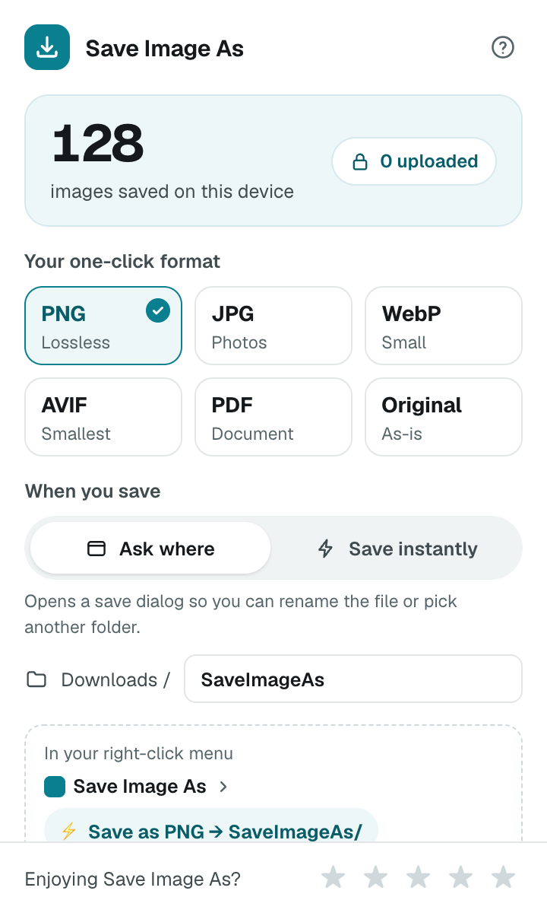

PNG · JPG · WebP · AVIF · PDF
Your format, your folder. Right-click → saved.

It finds the largest version the page has.
320 × 213
2400 × 1600
Under 1 MB for email and chat, or 200 KB for the web.
4.2 MB
0.9 MB
No account. No ads. No tracking. Open source.
1,284
images saved on this device
0 uploadedRight-click any image.
Save it in any format.
PNG · JPG · WebP · AVIF · PDF
Converted on your device. Nothing uploaded.